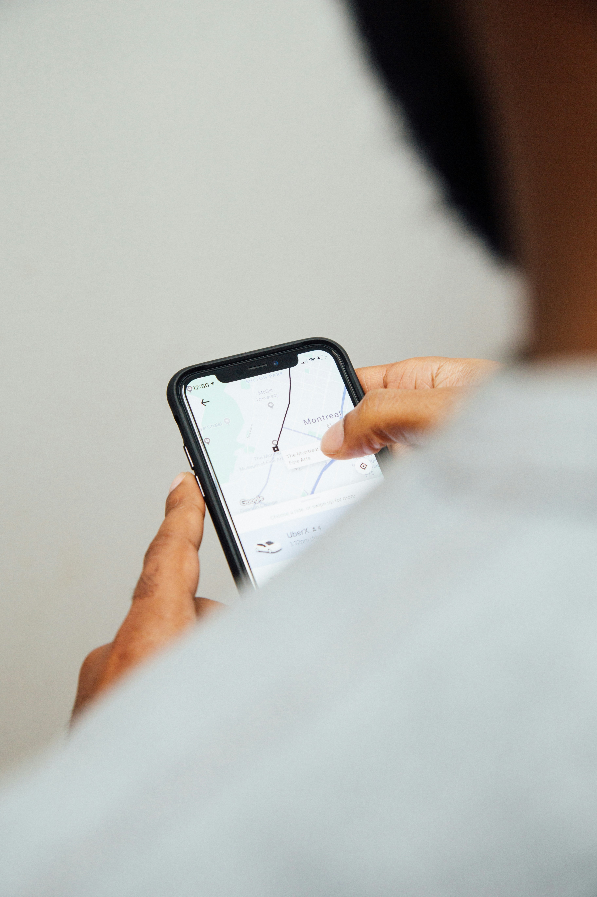

Taniti is a compact island, which makes getting around straightforward and affordable. Most visitors arrive by small commercial plane at Taniti's single-runway airport, or by cruise ship docking at Merriton Landing — the island's only port. From either arrival point, the rest of the island is within easy reach.
Taniti City is best explored on foot. For journeys further afield — to the resort, the north shore beaches, or trailheads into the rainforest — taxis, buses, and bike rentals are all readily available and inexpensive.

Taxis are the most convenient option for getting around quickly. They are available at the airport, Merriton Landing, and outside most hotels. Fares are metered and reasonable — a trip from the airport to Taniti City typically costs under $15.
Taniti operates a small public bus network connecting the airport, Merriton Landing, Taniti City, and the resort area. Buses run from early morning to around 10pm daily. A single fare costs $2 and exact change is appreciated.
Bikes and scooters can be hired from several outlets in Taniti City and at the resort. The island's coastal road is flat and well-maintained, making cycling a great way to spend a day. Helmets are provided and a valid ID is required for scooter hire.
| Route | From | To | Duration | Price |
|---|---|---|---|---|
| Airport Express | Taniti Airport | Taniti City Centre | 20 min | $2 |
| Harbour Shuttle | Merriton Landing | Taniti City Centre | 10 min | $2 |
| City to Resort | Taniti City Centre | Taniti Beach Resort | 25 min | $2 |
| North Shore Run | Taniti City Centre | North Shore Beach | 30 min | $2 |
| Highlands Trailhead | Taniti City Centre | Volcano Trail Start | 40 min | $3 |
Sign up for our newsletter and be the first to hear about new tours, seasonal deals, and island events.